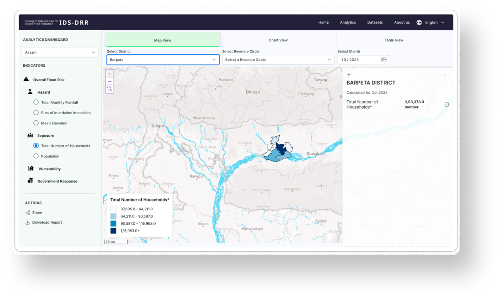

An open-source, modular platform that enables governments, researchers, and organizations to build data-driven disaster risk reduction systems for any geography.

IDS-DRR is an open source risk assessment tool for disaster intelligence that helps Disaster Management Authorities make timely data-driven decisions, prioritise expenditure of public funds and conduct public procurement in a manner that strengthens long-term disaster risk reduction and protects the most vulnerable people from the adverse effects of extreme weather events and climate change.
It enables governments and development organisations to integrate diverse datasets, including hazard information, environmental indicators, socio-economic data, infrastructure, public expenditure, procurement, and historical disaster impacts, into a unified decision-support system.
Rather than being limited to a single country or hazard, IDS-DRR is designed as a reusable architecture that can be configured for different regions, disaster types, and institutional needs. Organizations can customize datasets, analytical models, and visualizations while leveraging the same open technology stack.
IDS-DRR is developed as an open-source Digital Public Good. We welcome governments, developers, researchers, designers, and organizations to improve the platform by contributing code, datasets, documentation, and new ideas.
Explore installation guides, technical documentation, APIs, and deployment resources to launch IDS-DRR in your region.
Every platform component is available as open source. Browse, fork, and contribute to any repository.
Explore a live deployment for the state of Assam, India